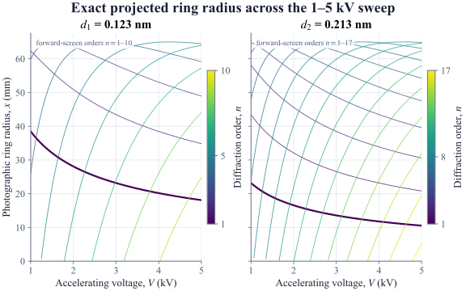
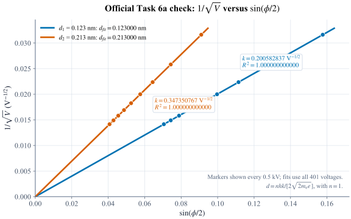
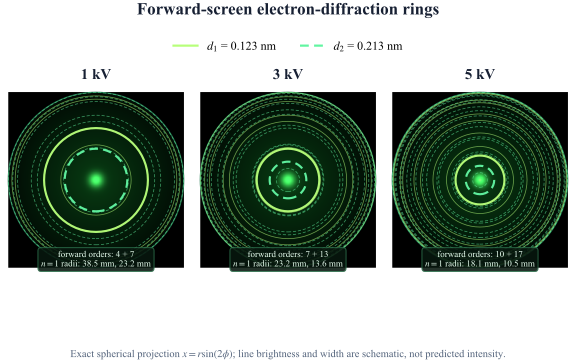
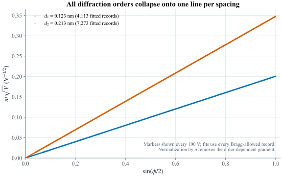

λ = h √(2meeV)
λ ∝ V−1/2. The accepted model is non-relativistic and uses exact SI h and e with the frozen 2022 CODATA electron mass.Electron diffraction · graphite
More voltage. Tighter rings.
Accelerating voltage shortens the electron’s de Broglie wavelength. Bragg angles contract, additional orders become possible, and the spherical screen records a changing geometry of concentric rings.
Live phosphor geometry
Loading 1–5 kV sweep
Checking evidence
Reading validated Task 6 evidence
The validated Task 6 evidence could not be loaded.
d1 = 0.123 nm · solid
d2 = 0.213 nm · dashed
Width and glow are schematic—not predicted intensity.- Electron wavelength
- —
- d1 first-order radius
- —
- d2 first-order radius
- —
- Forward orders
- —
Voltage samples
401
Bragg-allowed records
11,386
Forward-screen records
7,927
The screen includes every geometrically forward order. It does not predict which graphite reflections are bright, suppressed, or experimentally observable.
de Broglie meets Bragg
Momentum sets wavelength. Spacing sets angle.
The accepted baseline follows the official non-relativistic derivation exactly, then projects each allowed scattering angle onto the spherical phosphor screen.2d sin θ = nλ
φ = 2θ = 2 sin−1(nλ/2d)
x = r sin(2φ)
Written brief · authoritative radius
x = r sin(2φ)
Distance from the image centre to a ring on the photograph. This exact spherical projection drives the interactive screen.
Presentation derivation · separate observable
y = 2r sin φ
Full caliper chord across the ring. It is stored and validated, but never substituted for the photographic radius x.
The official Task 6a check
Straight lines recover both spacings exactly.
For first order, plotting 1/√V vertically against sin(φ/2) horizontally gives a line through the origin. Its gradient returns the nominal graphite spacing.
Selected evidence point
3.00 kV
Markers show every 0.5 kV for clarity; the fits use all 401 voltages.
Preparing validated fitsThe validated fit evidence could not be loaded.
Axis contract: Y = 1/√V in V−1/2; X = sin(φ/2), dimensionless. No small-angle approximation is used.
Two order domains, kept separate
Bragg can allow it. The forward screen may not.
The mathematical Bragg condition reaches q ≤ 1. The pictured forward hemisphere is stricter: q = sin(φ/2) ≤ 1/√2.nBragg,max = ⌊2d/λ⌋
— Includes backward-scattering solutions in the data table.nscreen,max = ⌊√2d/λ⌋
— Only these are drawn on the interactive phosphor screen.0 < φ ≤ 90°
3.00 kV Geometric classification—not an intensity threshold.
Accepted numerical evidence
Every ring position survives independent checks.
A 60-digit Decimal reference path verifies wavelength, order flooring, Bragg angles, both screen observables, endpoint anchors, line gradients, spacing recovery, and all-order collapse.
Independent checks
—
Loading validation report
Voltage range
1–5 kV
401 exact samples · 10 V spacing
Nominal spacings recovered
0.123 · 0.213 nm
Both first-order fits return R² = 1
Summary export
3840 × 2160
300-DPI PNG plus editable SVG



Evidence verification pending The page remains locked until all committed Task 6 evidence agrees.
{kind=link}
Extension decision
Interaction without invented dynamics.
The voltage control exposes every accepted evidence state on demand. Automatic ring animation and relativistic comparison remain outside the authoritative competition baseline.
Included here
Exact non-relativistic wavelength, both printed graphite spacings, every forward-screen order, exact spherical projection, and the official spacing-recovery fit.
Not implied
Calibrated brightness, reflection strength, experimental visibility, linewidth, detector response, or a small-angle approximation hidden inside the ring positions.
Preferred future extension
A separate non-relativistic-versus-relativistic radius comparison. At 5 kV the wavelength correction is about −0.244%, small but numerically resolvable.